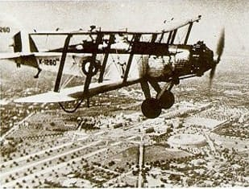
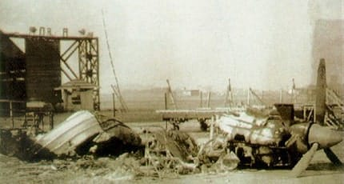

The Indian Air Force was officially established on 8 October 1932. Its first ac flight came into being on 01 Apr 1933. It possessed a strength of six RAF-trained officers and 19 Havai Sepoys (literally, air soldiers). The aircraft inventory comprised of four Westland Wapiti IIA army co-operation biplanes at Drigh Road as the "A" Flight nucleus of the planned No.1 (Army Co- operation) Squadron.
Four-and-a-half years later, "A" Flight was in action for the first time from Miranshah, in North Waziristan, to support Indian Army operations against insurgent Bhittani tribesmen. Meanwhile, in April 1936, a "B" Flight had also been formed on the vintage Wapiti. But, it was not until June 1938 that a "C" Flight was raised to bring No. 1 Squadron ostensibly to full strength, and this remained the sole IAF formation when World War II began, although personnel strength had by now risen to 16 officers and 662 men.
The IAF VR was now inducted into the regular IAF, the individual flights initially retaining their coastal defence status, but with Japan's entry into the war in December, No. 4 Flight, with four Wapitis and two Audaxes, was despatched to Burma to operate from Moulmein. Unfortunately, four of the flight's six aircraft were promptly lost to Japanese bombing and, late in January 1942, No. 4 Flight gave place in Moulmein to No. 3 Flight which had meanwhile re-equipped with four ex-RAF Blenheim ls. For a month, these Blenheims were to provide almost the sole air cover for ships arriving at Rangoon harbour.
For displaying outstanding leadership, great skill and courage in Burma Campaign during World War II. He was awarded the Distinguished Flying Cross (DFC) in 1944.
Beginning Aug 1945, Wg Cdr Arjan Singh was selected to undergo the RAF Staff college at Bracknell in the UK.
On 15 Aug 1947, he had the unique honour of leading the flypast of over a hundred IAF aircraft over the Red Fort and on the same day, he assumed the command of Air Force Station, Ambala in the rank of Group Captain.
In January 1950, India became a Republic within the British Commonwealth and the Indian Air Force dropped its "Royal" prefix. At this time, it possessed six fighter squadrons of Spitfires, Vampires and Tempests, operating from Kanpur, Poona, Ambala and Palam, one B-24 bomber squadron, one C-47 Dakota transport squadron, one AOP flight, a communications squadron at Palam and a growing training organisation. Training adhered closely to the pattern established by the RAF, most instructors having graduated from the CFS in the UK and in addition to No.1. Flying Training School at Hyderabad with Tiger Moths and Harvards and No. 2 FTS atJodhpur with Prentices and Harvards, there were IAF colleges at Begumpet, Coimbatore andJodhpur.Licence manufacture of the de Havilland Vampire had been initiated by HAL which, after building a batch from imported major assemblies, went on to manufacture a further 250. In addition, 60 Vampire T Mk. 55s were to be built of which 10 were assembled from imported kits. Nos.2,3 and 8 Squadrons followed No.7 Squadron on the Vampire, but, extraordinarily, 1951 also saw the formation of the last piston-engined fighter combat unit when No. 14 Squadron was raised on the Spitfire Mk. XVIII. Vampire NF Mk. 54 two-seat night fighters were obtained in May 1953 to re-equip No. 10. Sqn at Palam, thus endowing night-intercept capability upon the IAF for the first time. At this time, relations between India and Pakistan were again steadily deteriorating and the IAF, its combat strength virtually unchanged since partition in 1947, was scarcely ready for any full-scale conflict. Plans were accordingly framed for major expansion during the period 1953-57, and the Government began to seek non-traditional and alternative sources of combat aircraft procurement.
The December 1971 war also meant the gaining of India's highest award for gallantry to the IAF. Flying Officer Nirmal Jit Singh Sekhon, flying Gnats with No. 18 Squadron from Srinagar, was posthumously awarded the Param Vir Chakra. Notwithstanding the successful campaign of December 1971 which created both history and geography, the Indian Air Force had lessons to draw from subsequent analyses of the conflict, although for the most part, these lessons dictated refinement rather than any fundamental change.
Aircraft Systems Testing Establishment (ASTE) the Tactics & Air Combat Development Establishment, (TACDE), the 'College of Air Combat' and other specialist establiments continued to mature. Work on the ADGES was resumed in 1974-75 and plans for the qualitative upgrading of the entire Air Force were continually refined. The IAF handed over its Super Constellations to the Navy in 1975. The early seventies saw force levels being consolidated, and training in new weapons-systems and evolution of new tactics being honed.